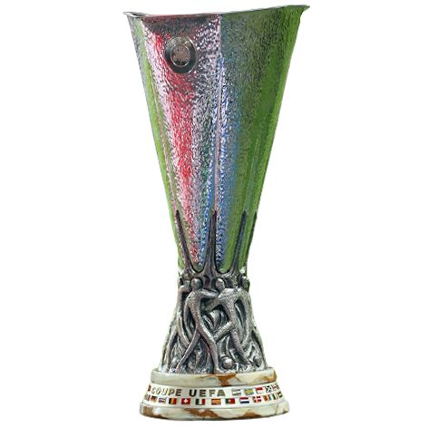
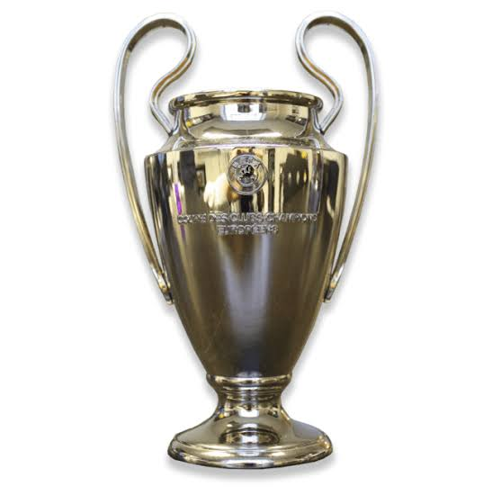
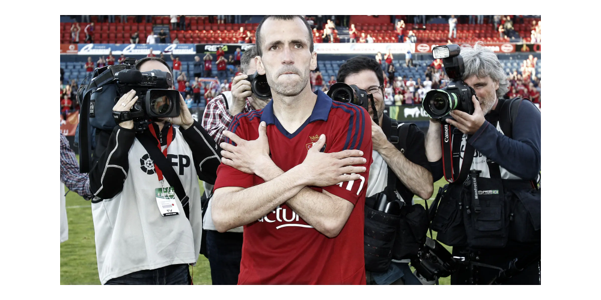

LaLiga: equipos y leyendas
Una página sobre los clubes y los jugadores que forman su historia.
LaLiga: equipos y leyendas
Una página sobre los clubes y los jugadores que forman su historia.
Leyenda del CA Osasuna





Francisco Puñal Martínez, conocido como Patxi Puñal, es uno de los grandes símbolos del Club Atlético Osasuna. Formado en la cantera rojilla, el centrocampista navarro convirtió su constancia, su capacidad para recuperar balones y su liderazgo en el campo en una forma de representar al club. Su trayectoria quedó vinculada a El Sadar: disputó 513 partidos oficiales con Osasuna y acompañó al equipo en una época que combinó permanencias exigentes con noches históricas en España y Europa.
Con 513 partidos oficiales, Patxi Puñal se retiró en 2014 como el jugador que más veces había defendido la camiseta de Osasuna.
Debutó con el primer equipo el 15 de junio de 1997 frente al Eibar y fue alternando sus apariciones con el filial hasta asentarse en la campaña 1998/99. Entre 1999 y 2001 estuvo cedido en el Leganés, antes de regresar a Pamplona para iniciar trece temporadas consecutivas en Primera División. En esa etapa sumó 420 partidos y 22 goles ligueros, todos con Osasuna. Desde el centro del campo ayudaba a frenar al rival, a iniciar los ataques y a sostener al equipo, convirtiéndose en un referente dentro y fuera del vestuario.
Puñal participó en la primera final de Copa del Rey de Osasuna, disputada en 2005, y en el cuarto puesto de Liga de 2005/06 que dio acceso a la previa de la Champions League. El curso siguiente trajo las semifinales de la Copa de la UEFA, uno de los mayores hitos europeos del club. Se retiró en 2014 como el futbolista con más encuentros oficiales en la historia rojilla. Ese mismo año recibió la Medalla de Oro al Mérito Deportivo de Navarra, un reconocimiento a su trayectoria y a su ejemplo como jugador.